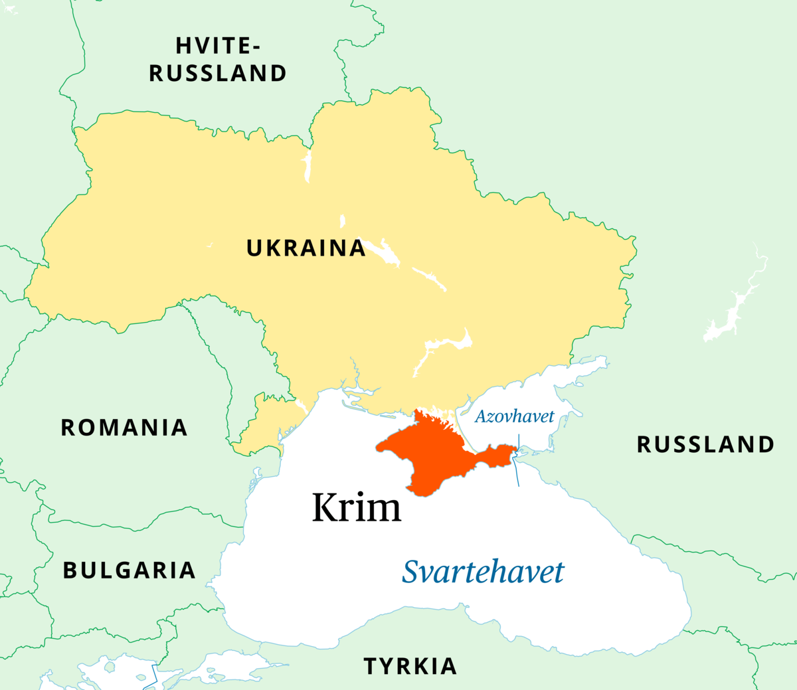
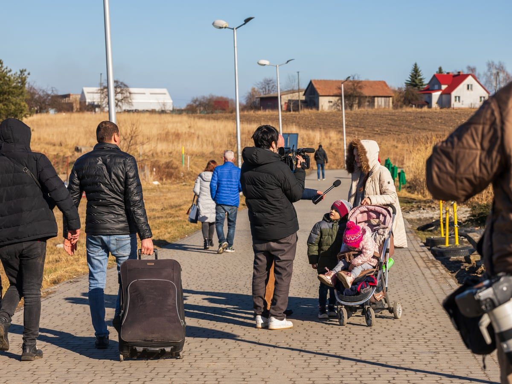
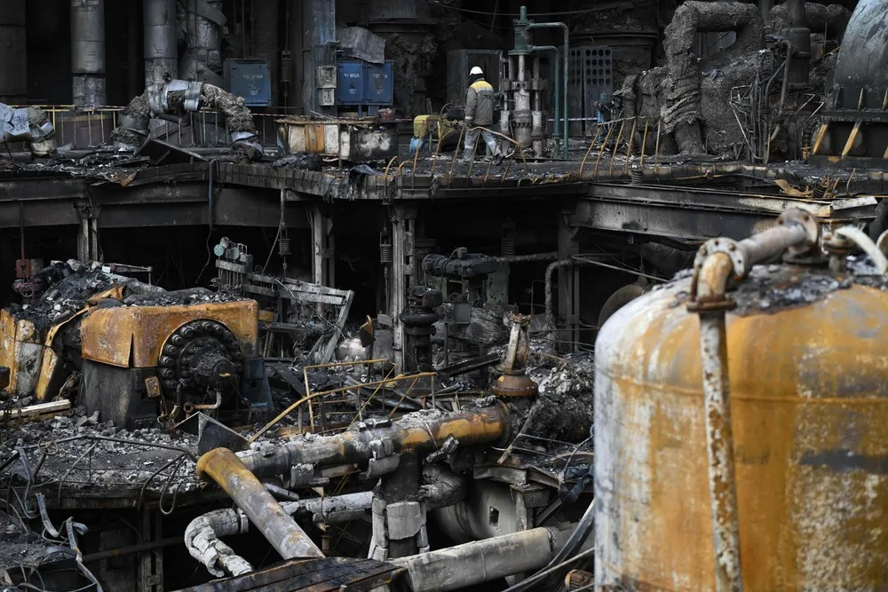
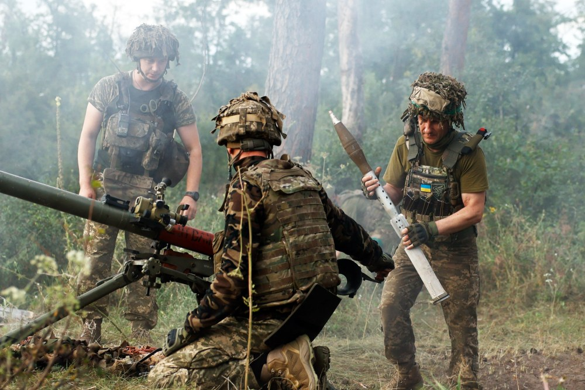
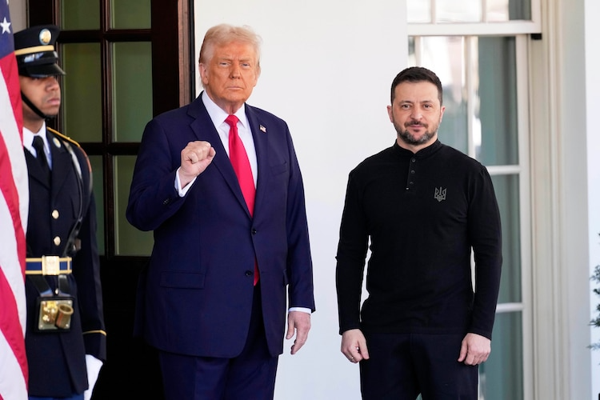

En faktabasert oversikt over konfliktens bakgrunn og konsekvenser
Skrevet av: Emil Berglund
Publisert: 16. september 2025
Oppdatert: 29. oktober 2025
Den russiske invasjonen av Ukraina i 2022 markerer den største væpnede
konflikten i Europa siden andre verdenskrig. Kampene har skapt enorme
humanitære lidelser, store ødeleggelser og ført til en geopolitisk
spenning som påvirker hele verden.
Bakgrunn for konflikten
Forholdet mellom Russland og Ukraina var anstrengt i lang tid før
invasjonen. Sentrale punkter i konflikten er Ukrainas ønske om å
nærme seg vestlige institusjoner som EU og NATO, og Russlands sterke
motstand mot dette. Allerede i 2014 ble forholdet dramatisk
forverret da Russland annekterte Krim-halvøya, etter uro og
protester i Ukraina som førte til at en Russland-vennlig president
måtte gå av.
Euromaidan-protestene i Kiev vinteren 2013-2014 var en vendepunkt.
Da president Viktor Janukovitsj avviste en handelsavtale med EU til
fordel for tettere bånd med Russland, tok hundretusener til gatene.
Protestene resulterte i voldelige sammenstøt, og i februar 2014
flyktet Janukovitsj til Russland. Kort tid etter tok russiske
styrker kontroll over Krim-halvøya uten merker, og gjennomførte en
kontroversiell folkeavstemning som internasjonale observatører
avviste som illegitim.
Samtidig brøt det ut væpnede konflikter i Donbas-regionen i
Øst-Ukraina, hvor russiskstøttede separatister erklærte de såkalte
"folkerepublikkene" Donetsk og Luhansk. Kampene i Donbas mellom 2014
og 2022 krevde ifølge FN over 14 000 liv og skapte en langvarig
frossen konflikt langs kontaktlinjen.

Krimhalvøya vist i rødt og resten av Ukraina i gult. Kilde: SNL
Invasjonen i 2022
Den 24. februar 2022 innledet Russland en fullskala invasjon av
Ukraina. Russiske styrker angrep fra flere retninger, inkludert nord
(gjennom Belarus/Hvite Russland), øst (Donbas-regionen) og sør (fra
Krim). Målet skal ifølge Russland ha vært å «demilitarisere og
denazifisere» Ukraina, men internasjonalt ble handlingen oppfattet
som en uprovosert aggresjon.
Selv om Russland hadde forventet en rask seier, møtte hæren sterk
ukrainsk motstand. Stridene rundt hovedstaden Kyiv viste at Ukraina
både hadde kampvilje og effektivt forsvar, støttet av betydelige
våpenleveranser fra vestlige land. Innen april 2022 hadde Russland
trukket seg tilbake fra nord og konsentrert offensiven mot øst og
sør.
I de første ukene av krigen ble den ukrainske byen Mariupol beleiret
og nesten fullstendig ødelagt. Kampene om Azovstal stålverk, hvor
ukrainske forsvarere holdt stand i ukevis, ble et symbol på ukrainsk
motstand. Byens fall i mai 2022 kostet tusenvis av sivile liv og
etterlot en by i ruiner.
Kampene forløp og territorium
Etter de innledende kampene stabiliserte frontlinjene seg i store
deler av 2022-2023, før Ukraina lanserte en motoffensiv sommeren
2022 som gjenvant betydelige områder i Kharkiv og Kherson-regionene.
Høsten 2023 forsøkte Ukraina en ny offensiv i sør, men denne
oppnådde begrensede territoriale gevinster på grunn av omfattende
russiske forsvarslinjer med minefelt og befestninger.
I henhold til "Institute for the Study of War" har Russland siden
24. februar 2022 tatt kontroll over cirka 28 450 kvadratkilometer av
ukrainsk territorium - omtrent 12% av landet. Inkludert Krim og
tidligere okkuperte deler av Donbas kontrollerer Russland nå cirka
45 075 kvadratkilometer, eller 19% av Ukrainas totale areal (per
oktober 2025).
Animasjon som viser territorielle endringer i Ukraina fra februar
2022 til juli 2023.
Den humanitære situasjonen
Krigen har hatt katastrofale følger for sivilbefolkningen. Flere
millioner ukrainere har flyktet til naboland som Polen, Tyskland og
Norge, mens millioner er internt fordrevne. Byer som Mariupol,
Bakhmut og Avdiivka har blitt sterkt ødelagte, og viktige deler av
infrastruktur - som strømnett, vann og sykehus - er rammet av
bombing.
FNs menneskerettskontor (OHCHR) har dokumentert 14 116 sivile
dødsfall i Ukraina siden invasjonens start (per september 2025), men
det faktiske tallet antas å være betydelig høyere. Mange dødsfall i
okkuperte områder og beleirede byer er ikke registrert.
Flyktningkrisen
Per oktober 2025 har over 5,7 millioner ukrainere søkt tilflukt i
europeiske land, med størst antall i Polen (over 1 million),
Tyskland, Tsjekkia og Storbritannia. I tillegg er cirka 3,8
millioner mennesker internt fordrevne innenfor Ukrainas grenser.
Norge har tatt imot rundt 75 000 ukrainske flyktninger.
Barn er spesielt hardt rammet. UNICEF rapporterer at millioner av
barn har måttet flykte fra hjemmene sine, og mange har opplevd
traumer fra bombing og vold. Utdanning er sterkt forstyrret, med
omkring 350 000 barn som går på skole fysisk i frontlinjeområdene,
mens over 400 000 følger en blandet timeplan og cirka 280 000 kun
har nettundervisning.

Millioner av ukrainere har flyktet fra krigen. Kilde: The Guardian
Militære tap og menneskelig kostnad
Krigen har kostet et enormt antall menneskeliv på begge sider.
Nøyaktige tall er vanskelige å bekrefte, men vestlige
etterretningstjenester anslår russiske tap til over 790 000 drepte
eller sårede soldater per april 2025. Nyere analyser fra The
Economist antydet i oktober 2025 at russiske tap kan ha nådd mellom
984 000 og 1 438 000, inkludert 190 000 til 480 000 drepte.
Ukrainske tap er også betydelige, men lavere enn russiske. President
Zelenskyy opplyste i februar 2025 at over 46 000 ukrainske soldater
var drept og omkring 390 000 såret. Den dokumenterte databasen
UALosses har registrert 77 403 bekreftede dødsfall blant ukrainske
soldater, men dette anses som et minimumstall.
Russland bruker såkalte "kjøttbølge"-taktikker, hvor mindre grupper
soldater sendes inn i dødssoner for å ta frem- skutte posisjoner,
noe som resulterer i ekstremt høye tap. Politico rapporterte i
oktober 2025 at Russland mistet 281 550 soldater bare i de første
åtte månedene av 2025, med et forhold på 1,3 sårede per død - langt
lavere enn typiske krigsforhold, noe som indikerer dårlig medisinsk
evakuering.
Angrep på energiinfrastruktur
En viktig del av Russlands strategi har vært omfattende angrep på
Ukrainas energiinfrastruktur, spesielt foran vintermånedene. Høsten
2025 har sett en dramatisk intensivering av disse angrepene, med
minst 42 angrep med langdistanse- missiler og droner bare i
begynnelsen av oktober.
Målene inkluderer kraftverk, transformatorstasjoner, gass-
produksjon og lagringsfasiliteter. Ifølge det ukrainske
energidepartementet har Russland ødelagt cirka 64% av Ukrainas
strømproduksjonskapasitet (per slutten av 2024), og cirka 60% av
landets naturgassproduksjon (per oktober 2025).
Foreign Policy rapporterte 29. oktober 2025 at Russland spesifikt
har rettet angrepene mot østlige byer som Sumy, Chernihiv, Kharkiv
og Poltava, noe som har ført til omfattende strømutfall og skapt en
humanitær krise foran vinteren. Russiske droner sirkler over skadede
anlegg for å forhindre reparasjoner.

Russiske angrep har ødelagt store deler av Ukrainas
energiinfrastruktur. Foto: Genya Savilov / AFP / NTB
Internasjonale reaksjoner
Invaderingen utløste en samlet reaksjon fra vestlige land. USA, EU
og flere andre stater har innført omfattende økonomiske sanksjoner
mot Russland. Disse inkluderer frys av sentralbank- reserver, kutt i
energihandel og eksportrestriksjoner på teknologi. Samtidig har
Ukraina mottatt storstilt militær- støtte i form av våpen, opplæring
og økonomisk bistand.
Militær støtte til Ukraina
USA har levert militær bistand for over 100 milliarder dollar siden
2022, inkludert avanserte våpensystemer som HIMARS rakettsystemer,
Patriot luftvern, og nylig også F-16 kampfly og tillatelse til bruk
av ATACMS langdistansemissiler. EU-land har kollektivt bidratt med
titalls milliarder euro i militær og humanitær støtte.
I oktober 2025 kunngjorde president Zelenskyy at Ukraina og Sverige
hadde inngått avtale om å lokalisere produksjon av svenske Gripen
jagerfly i Ukraina, med leveranser forventet fra tidlig 2026.
Sverige har lovet å levere 150 Gripen-fly.
Økonomiske sanksjoner
President Donald Trump eskalerte sanksjonsregimet dramatisk i
oktober 2025 ved å sanksjonere de finansielle delene av Russlands to
største oljeprodusenter, Rosneft og Lukoil, som sammen står for
halvparten av Russlands oljeeksport. Sanksjoner retter seg mot
enhver som hjelper disse selskapene med å bruke det amerikanske
dollarsystemet.
Bloomberg rapporterte at disse sanksjoner allerede har ført til at
indiske raffinerier pauser nye ordre av russisk olje. Meduza
analyserte at de nye sanksjoner kunne utløse en kaskade av skadelige
effekter: en svakere rubel, krympende olje- og gassinntekter, og en
resesjon kombinert med høye renter og inflasjon.
Frontlinjen og dagens situasjon (oktober 2025)
Krigen har utviklet seg til en stillingskrig, spesielt øst i
Ukraina, hvor frontlinjene ofte flytter seg lite over tid. Russland
har erklært at de anser fire ukrainske regioner (Donetsk, Luhansk,
Zaporizhia og Kherson) som innlemmet i Russland, men ukrainske
myndigheter og store deler av verdenssamfunnet avviser dette.

Ukrainsk soldat klargjør artilleri for avfyring. Foto: Getty Images
Per oktober 2025 har russiske styrker intensivert offensiven mot
byen Pokrovsk i Donetsk-regionen, en strategisk viktig
logistikknutepunkt. Institute for the Study of War rapporterte 28.
oktober at russiske styrker har gjort framskritt i sørøstlige
utkanten av byen, men møter fortsatt sterk ukrainsk motstand.
President Putin skal ha pålagt den russiske hæren å ta Pokrovsk
innen midten av november, et mål som analytikere anser som
urealistisk.
Ukraina fortsetter med offensiver for å gjenerobre territorium, men
møter store utfordringer som minefelt, befestede stillinger og
tidvis mangel på ammunisjon. Samtidig har russiske styrker mistet
enorme ressurser og soldater, men mobiliserer stadig nye gjennom
høye kontraktsbonuser.
I en overraskende motoffensiv tok ukrainske styrker i august 2024
kontroll over deler av den russiske Kursk-regionen, det første
utenlandske angrepet på russisk jord siden andre verdenskrig. Per
oktober 2025 holder Ukraina fortsatt små områder i Kursk, selv om
kontrollert territorium har krympet fra tidlig inntektene.
Krigsforbrytelser og internasjonal rettferdighet
FNs menneskerettskontor, Human Rights Watch og andre organisasjoner
har dokumentert omfattende krigsforbrytelser begått av russiske
styrker i Ukraina. Disse inkluderer målrettede angrep på sivile,
tortur, voldtekt, tvangsdeportasjon av barn, og øđeleggelse av sivil
infrastruktur.
Den internasjonale straffedomstolen (ICC) i Haag utstedte i mars
2023 arrestordre mot president Vladimir Putin og Russlands
barnekommissær Maria Lvova-Belova for påståtte krigsforbrytelser
knyttet til ulovlig deportasjon av ukrainske barn til Russland. Per
oktober 2025 har ICC utstedt arrestordre mot til sammen seks
høytstående russiske tjenestemenn.
I oktober 2025 dokumenterte Human Rights Watch et bevisst russisk
droneangrep mot en FN-hjelpekonvoi i Kherson-regionen. Video
publisert av russisk-tilknyttede Telegram-kanaler viste hvordan
operatører fløy minst tre droner med eksplosiver mot tydelig merkede
FN-lastebiler, noe som resulterte i skade på begge kjøretøy og
brann.
Nylig i oktober 2025 ble flere sivile henrettet av en russisk
sabotasje- og rekognoseringsgruppe i sentrale Pokrovsk, i strid med
internasjonal humanitær rett, ifølge det ukrainske
utenriksdepartementet.
Betydningen for verdenspolitikken
Konflikten har vist hvor sårbar internasjonal stabilitet er. NATO
har styrket seg med nye medlemsland som Finland og Sverige, og
debatten om alliansens fremtidige rolle har blitt forsterket.
Russland har på sin side søkt tettere samarbeid med Kina, Iran,
Nord-Korea og andre stater.
Russland hevder at NATO utgjør en betydelig trussel gjennom østlig
ekspansjon og ved å levere våpen til Ukraina. Utenriks- minister
Sergey Lavrov gjentok i oktober 2025 at Russland ikke vil godta en
umiddelbar våpenhvile som ikke resulterer i Ukrainas fullstendige
kapitulasjon.
Krigen setter spørsmålstegn ved hvor langt folkerett og
internasjonale lover kan beskytte små og mellomstore land mot
stormakter. Den har også aktualisert debatten om ytrings- frihet,
krigspropaganda og kontroll over informasjon.
Globale økonomiske konsekvenser
På globalt plan har krigen skapt usikkerhet omkring mat- forsyning,
fordi både Russland og Ukraina er store eksportører av korn og
gjødsel. I 2022 blokkerte Russland ukrainske havner, noe som førte
til matvarekrise i flere afrikanske og asiatiske land. En
FN-formidlet korneksportavtale fungerte periodisk i 2022-2023, men
Russland trakk seg fra avtalen i juli 2023.
Energimarkedet er også hardt rammet, særlig i Europa som tidligere
var sterkt avhengig av russisk naturgass. Europeiske land har siden
2022 redusert importen av russisk gass med over 80% og funnet
alternative forsyninger fra Norge, USA (LNG) og andre kilder, selv
om dette har ført til høyere energipriser.
Fredsforhandlinger og framtidsutsikter
Ingen ser ut til å ane et raskt sluttpunkt på krigen. Forsøk på
forhandlinger har mislyktes, og begge sider fastholder harde krav.
For Ukraina handler det om å forsvare sin suverenitet og
territorielle integritet. For Russland handler det om å bevare
innflytelse og kontroll over et naboland de lenge har betraktet som
en del av sin historiske interessesfære.
I oktober 2025 foreslo president Donald Trump en umiddelbar
våpenhvile med nåværende frontlinje som utgangspunkt for
fredsforhandlinger. Ukraina og flere europeiske ledere, inkludert
Storbritannias statsminister Keir Starmer, Tysklands kansler
Friedrich Merz og Frankrikes president Emmanuel Macron, uttrykte
støtte til forslaget i en felles erklæring 21. oktober.

President Trump og president Zelenskyy utenfor det hvite hus. Foto: Ben Curtis/AP
President Zelenskyy sa 29. oktober at Ukraina er klart for
fredssamtaler, men vil ikke avstå mer territorium som Moskva har
krevd. Han kunngjorde at ukrainske og europeiske rådgivere ville
møtes i slutten av uken for å diskutere detaljene i en
våpenhvileplan.
Risikoen for en langvarig konflikt - og konsekvensene for både
regionen og global stabilitet - er svært stor. Flere analytikere
advarer om at uten betydelig militær og økonomisk støtte til
Ukraina, eller dramatisk økt press på Russlands økonomi, kan krigen
pågå i flere år framover.
Konklusjon
Krigen i Ukraina representerer den mest alvorlige sikkerhets- krisen
i Europa siden den kalde krigens slutt. Med hundre- tusenvis av
døde, millioner av flyktninger, omfattende materielle ødeleggelser
og dype geopolitiske konsekvenser, har konflikten fundamentalt
endret den europeiske sikkerhets- arkitekturen.
Verdenssamfunnet fortsetter å søke løsninger, men veien til en varig
fred forblir uklar. Det som er sikkert er at konsekvensene av denne
krigen vil prege internasjonal politikk, økonomi og sikkerhet i
mange år framover.
Regjeringen.no. (2022, April). Tidslinje: Regjeringens håndtering av
krigen i Ukraina. Regjeringen.no.
https://www.regjeringen.no/no/tema/ukraina/tidslinje-
regjeringens-handtering-av-krigen-i-ukraina/id2906711/
Imislund, Helene: Krigen i Ukraina i Lille norske leksikon på
snl.no. Hentet 29. september 2025 fra
https://lille.snl.no/Krigen_i_Ukraina
Holm-Hansen, Jørn; Bukkvoll, Tor; Paulsen, Martin: Krim i Store
norske leksikon på snl.no. Hentet 29. september 2025 fra
https://snl.no/Krim
Tondo, L., & Walker, S. (2022, 24. februar). Thousands of Ukrainians
flee country after Russian invasion. The Guardian.
https://www.theguardian.com/world/2022/feb/24/ukraine-russia-
flee-country-invasion
Institute for the Study of War. (2025, 28. oktober). Russian
Offensive Campaign Assessment, October 28, 2025.
https://understandingwar.org/
The Economist. (2025, 17. oktober). Russia's latest big Ukraine
offensive gains next to nothing, again.
https://www.economist.com/interactive/europe/2025/10/17/
Russia Matters. (2025, 1. oktober). The Russia-Ukraine War Report
Card. https://www.russiamatters.org/
Politico EU. (2025, 13. oktober). Russia bleeds troops for
microscopic frontline gains. https://www.politico.eu/article/
Foreign Policy. (2025, 29. oktober). Russia Aims to Freeze Ukraine
Into Submission. https://foreignpolicy.com/2025/10/29/
UN News. (2025, 27. oktober). Children at risk as winter looms amid
renewed strikes in Ukraine.
https://news.un.org/en/story/2025/10/1166193
ACLED. (2025, 23. oktober). Ukraine war situation update: 4-10
October 2025. https://reliefweb.int/
Human Rights Watch. (2025, 22. oktober). Russian Forces Deliberately
Attack UN Aid Convoy. https://reliefweb.int/report/ukraine/
NPR. (2025, 26. oktober). How the U.S.'s new sanctions on Russia
could impact the war in Ukraine. https://www.npr.org/
Meduza. (2025, 28. oktober). Raising the pressure: Trump is hitting
Russia with sanctions. https://meduza.io/en/feature/2025/10/28/
UK House of Lords Library. (2025, 27. oktober). Ukraine update:
October 2025. https://lordslibrary.parliament.uk/
Arne Søiland. (2025). Tre år med bombing og angrep på kraftverk: Slik har Ukraina opprettholdt
strømforsyningen under krigen (+). Europower.no.
https://www.europower.no/marked/tre-ar-med-bombing-og-angrep-pa-kraftverk-slik-har-ukraina-opprettholdt-stromforsyningen-under-krigen/2-1-1781140?zephr_sso_ott=9lHo0L
Austin, H. (2023, August 31). Russian invasion: Ukrainian forces make gains on front line, Kyiv says. NBC News.
https://www.nbcnews.com/news/world/russia-ukraine-war-counteroffensive-breakthough-crimea-rcna102799
Brennan, D. (2025, August 18). Trump says Zelenskyy can end Russia war “almost immediately” before White House meet. ABC
News. https://abcnews.go.com/International/trump-zelenskyy-end-russia-war-immediately-white-house/story?id=124734583